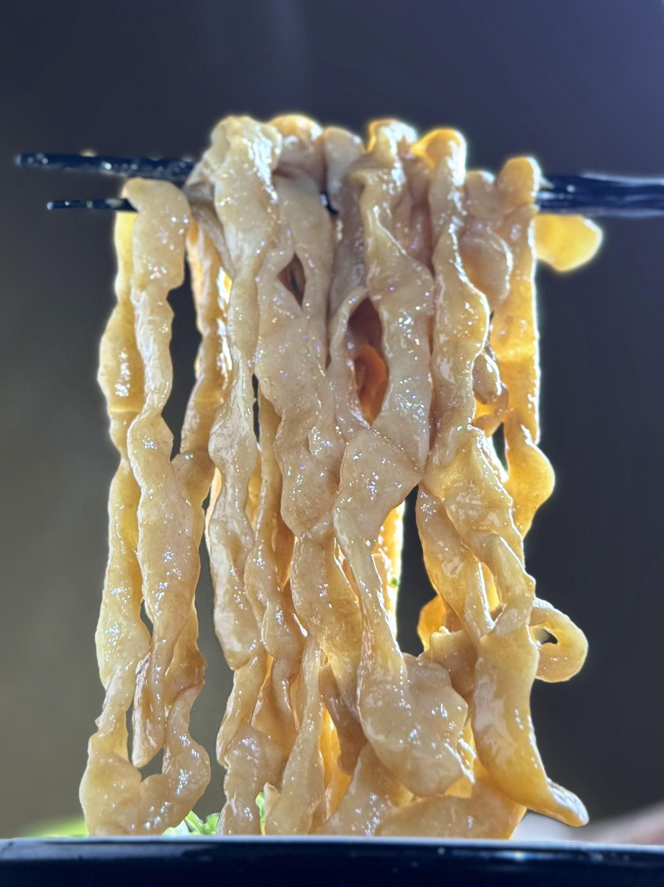

LIVE BOLD. EAT BOLD.
MENYA BUTTOKUIKIRO ／ 2025.05.26 OPEN
大阪・本町駅 7・9番出口 徒歩1分
01 ｜ 店主の想い
ぶっとい男でありたい。
ぶっとい人生を送りたい。
シンプルにただ、それだけを願い生きてきた。
そうして辿り着いたのが、このぶっとい麺だった。
— 店主
03 ｜ 食べ方
ぶっとく喰らう四つの作法
三味変
あご酢ひとまわし、自家製ラー油一杯、ニンニクダレ二杯、魚粉でブースト。
四〆
米をぶっこみ喰らう。出汁を入れ、茶漬けで完結。
04 ｜ こだわり
ぶっとい麺へのこだわり
当店のぶっとい麺は全て国産もち小麦を使用しております。注文をいただいてからひとつずつ手揉みをし、旨みたっぷりのカエシや油をしっかり絡ませるのが特徴です。機械では生まれない、手揉みならではの不揃いな力強さ。それこそが、このぶっとい麺の魅力。口に運ぶたびに変わる個性豊かな食感をぜひお楽しみください。
05 ｜ 店舗・営業時間
麺屋 ぶっとく生きろ。
本町店
2025.05.26 OPEN
住所〒541-0054 大阪市中央区南本町3丁目3-17 丸松ビルB1
アクセスOsaka Metro 本町駅 7・9番出口 徒歩1分
席数16席（カウンター8・テーブル8）／全席禁煙
予算昼夜とも 1,000〜2,000円
その他予約不可・駐車場なし
営業時間
月〜金11:30–14:30／17:00–23:00土・日11:30–14:30祝日定休
06 ｜ よくある質問
お越しになる前に
Q支払い方法を教えてください。
A現金・クレジットカード・電子マネー・QRコード決済がご利用いただけます。
Q予約はできますか。
A予約はお受けしておりません。直接ご来店ください。
Q麺の量は選べますか。
A標準は300gです。200gと300gは同じ価格でお選びいただけます。400gは＋150円です。まぜそばのみ対象で、ラーメンは選択できません。
Q持ち帰りはできますか。
A現在テイクアウトは行っておりません。店内でお召し上がりください。
Q子ども連れやベビーカーでも入れますか。
A当店は地下1階にあり、階段でお越しいただく必要があります。ベビーカーでのご来店には向きません。
Qアレルギーへの対応はできますか。
A使用している原材料はお伝えできます。ご注文前にスタッフへお声がけください。ただし、すべてのアレルギーに対応することはできません。
Q席数を教えてください。
A16席（カウンター8・テーブル8）です。
QWi-Fiは使えますか。
A店内で無料Wi-Fiをご利用いただけます。当店は地下1階のため電波が入りにくい場所があります。ご来店後はWi-Fiへの接続をおすすめします。
07 ｜ 最新情報
限定麺・臨時休業・ぶっとくの日はSNSでお知らせします。
08 ｜ 求人
一緒に、ぶっとく生きろ。
社員・アルバイト募集中。経験は問いません。腹の据わった人を待っています。
応募・お問い合わせ
MENYA BUTTOKUIKIRO
© 2026 麺屋 ぶっとく生きろ。
当サイトでは、サイトの利用状況を把握するために Google アナリティクスを利用しています。これにより、閲覧されたページや端末の情報などが Google へ送信されます。個人を特定する情報は送信していません。取り扱いについてはGoogle のポリシーと規約をご覧ください。ブラウザの設定でこの送信を無効にできます。